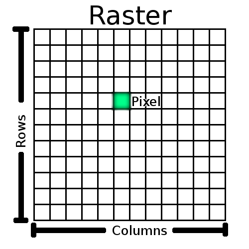
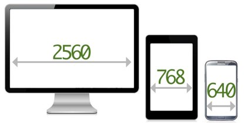
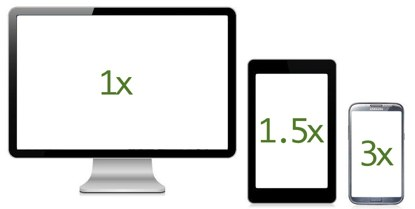
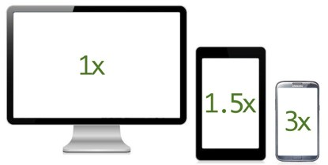
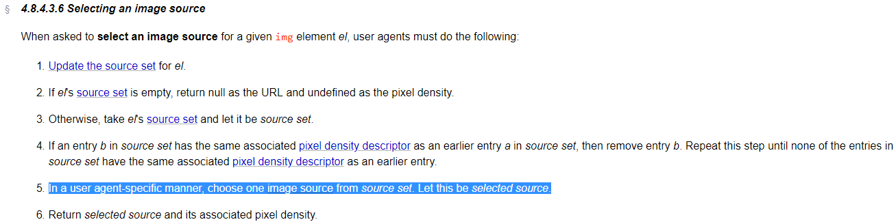

Responzivní obrázky
Martin Dybal
https://www.dybal.it/presentations/responsive-images
O čem to bude?
- Minulost obrázků na webu
- Formáty obrázků
- Proč potřebujeme responzivní obrázky
-
Řešení
asrcsetsizes
elementpicture
- Řešení na serveru
- Optimalizace obrázků
- Lazy loading
Historie
-
Rok 2000
-
Rozlišení 800x600
- Machři 1024x768
- Weby s pevnou šířkou
-
Rozlišení 800x600
-
Rok 2006
-
Responsivita začíná
- Technologie na to nejsou připravené
-
Responsivita začíná
Historické řešení
- Hacky pomocí css
- Detekce UA na serveru
Formáty obrázků
-
Vektorové
- Loga, ikony a pomocná grafika
-
Rastrové
- Fotografie
SVG - Scalable Vector Graphics
-
Obrázek neukládá jako pixely, ale jako popis obrazců
- Vhodný pro Loga, Ikony, prvky uživatelského rozhran, ilustrace
- Nevhodný pro fotogragie
-
Umožňuje
- Zvětšování obrázku bez ztráty kvality
- Animace
- Stylování pomocí CSS
- Uživatelskou interakci JS
-
Ukázka
<?xml version="1.0" encoding="utf-8" ?> <svg xmlns="http://www.w3.org/2000/svg" width="400" height="400"> <circle cx="100" cy="100" r="50" fill="red" /> </svg>
Použití SVG
-
Jako obrázek
<img alt="logo" src="logo.svg" onerror="this.onerror=null; this.src='logo.png'>- Cache obrázků
- Nelze upravovat pomocí css nebo js
- Větší podpora prohlížečů (IE8, Android 2.3), dnes nepodstatné
-
Jako svg element
<svg xmlns="http://www.w3.org/2000/svg" width="400" height="400"> <circle cx="100" cy="100" r="50" fill="red" /> </svg>-
Lze stylovat pomocí CSS
- Může být responzivní
-
Lze stylovat pomocí CSS
-
Formát má velký potenciál a v posledních letech se využívá čím dál více
- Více na www.vzhurudolu.cz/svg
Rastrové obrázky
-
Ukládají pixely
- vhodné pro fotografie
-
bmp, gif, jpeg, png, webp

Srovnání velikostí
Srovnání je velmi orientační! Záleží hodně na konkrétním nastavení komprimovacích algoritmů!BMP
- Je ukládán po pixelech
- Nepoužívá žádnou kompresi
- V praxi se na webu nepoužívá vůbec
GIF
- Používá bezeztrátovou kompresi, ale umožňuje pouze 256 barev
- Umožňuje animace
-
dnes se již nepoužívá, byl nahrazen formátem png
- Pro animace lze použít formát apng (nepodporuje IE) nebo svg
png 97KB
gif 104KB
PNG
- Používá bezeztrátovou kompresi
- Umožňuje použití alfa kanálu (průhlednost). I poloprůhlednost (RGBA)
-
Typy formátu
-
GrayScale
- Barevná hloubka 24bit = 16 milionů barev
-
indexed color (PNG-8)
- Barevná hloubka 8bit = 256 barev
-
truecolor (PNG-24)
- Barevná hloubka 24bit = 16 milionů barev
-
GrayScale
- Pro animace je speciální formát APNG, případně MNG
- Na webu se používá především pro podporu průhlednosti a jako fallback svg
JPEG
- Ztrátová komprese, využívá nedokonalosti lidského oka
- Ideální formát pro fotografie
- Nepodporuje alfa kanál
-
Nehodí se pro obrázky s ostrýmy hranami.
- Ikony, perokresba, Text
Progressive jpeg
Ukázka
source: http://pooyak.com/p/progjpeg/
WebP
- Umožňuje ztrátovou i bezeztrátovou kompresi
- Podporuje alfa kanál
- Umožňuje animace
- Neumí progresivní vykreslování
- Vyvinut Googlem v roce 2010
- Úspora dat při bezztrátové kompresi proti png až 26%
- Úspora dat při ztrtové kompresi proti jpeg až 34%
-
Podpora
- Chrome, Opera
- Edge
- Firefox přidá podporu ve verzi 65 (29. 1. 2019)
- Nutnost používat fallback
Jaký zvolit formát?
- Pokud lze, použít vektorový formát SVG
- Pokud je potřeba alfa kanál, WebP s fallbackem na PNG
- Jinak, WebP s fallbackem na JPEG
Proč potřebujeme
responzivní obrázky
Use cases



- Resolution-based selection
- Viewport-based selection
- Device-pixel-ratio-based selection
- Art direction
- Design breakpoints
- Matching media features and media types
- Relative units
- Image formats
- User control over sources
- Managing source swapping between breakpoints
Řešení
- přidány atributy
taguimg
asrcsetsizes
elementpicture
srcset
<img sizes="100vw" srcset="https://via.placeholder.com/1200x800.png 1200w, https://via.placeholder.com/1600x1066.png 1600w" />-
Množina zdrojů obrázků, oddělených čárkou
- Všechny obrázky musí mít stejnou kompozici
- Všechny obrázky musí mít stejný formát souboru
- Nevíme, který obrázek prohlížeč vybere
- Zdrojů může být neomezeně
- Každý zdroj má jeden deskriptor
- Formát
src descriptor, src deskriptor - Deskiptor
nebox
říká prohlížeči jaký obrázek se na adrese src nacházíw
Deskriptor X
<img height="100" width="100" sizes="100px"
srcset="https://via.placeholder.com/100x100.png 1x,
https://via.placeholder.com/150x150.png 1.5x,
https://via.placeholder.com/200x200.png 2x,
https://via.placeholder.com/300x300.png 3x" />- Říká pro jaké
je obrázek připravendevice-pixel-ratio - Běžně se moc nepoužívá, výhodnější je
w
Deskriptor W
<img height="100" width="100" sizes="100px"
srcset="https://via.placeholder.com/100x100.png 100w,
https://via.placeholder.com/150x150.png 150w,
https://via.placeholder.com/200x200.png 200w,
https://via.placeholder.com/300x300.png 300w" />- Říká pro jakou šířku v px má obrázek
- Prohlížeč zná velikost obrázku i
a podle toho vybere vhodný obrázekdevice-pixel-ratio
Výběr obrázku ze srcset
Výběr je na prohlížeči. Vývojář ji nemůže ovlivnit.
Specifikace: Selecting an image source
Výběr obrázku ze srcset
- Velikost obrázku na stránce
device-pixel-ratio- Uživatelská preference (Data saver mode)
- Cache
Výběr obrázku ze srcset
<img srcset="https://via.placeholder.com/1200x800.png 1200w, https://via.placeholder.com/1600x1066.png 1600w" />Edge
-
Geometrický průměr
- Geometrický průměr: breakpoint = √(src1w * src2w)
- √(1200 * 1600) = 1385px
Chrome, Firefox
-
Bere nejbližší vyšší pro DPI <= 1
- Breakpoint = 1201px
- Pro DPI > 1 berou geometrický průměr
Sizes
-
říká prohlíčeči, jak velký bude obrázeksizes- V době vykreslování obrázku, nejsou staženy css
<img sizes="100vw" srcset="..." /> <img sizes="(min-width: 1200px) 1200px, 100vw" srcset="..." /> <img sizes="(max-width: 767px) 100vw, (max-width: 991px) 50vw, (max-width: 1199px) 33vw, 25vw" srcset="..." /> <img sizes="(min-width: 1200px) calc(25vw - 3rem), (min-width: 992px) calc(33vw - 3rem), (min-width: 768px) calc(50vw - 3rem), calc(50vw - 3rem)" srcset="..." /> - Na pořadí záleží! bere se první vyhovující
-
Lze použít libovolné css jednotky
- css ještě není staženo a aplikováno!
- Nejvhodnější jednotky
,vw
,vh
,vmin
avmaxpx
Nikdy nezapomínejte na sizes!


<img height="400" width="400" srcset="https://via.placeholder.com/400x400.png 400w,
https://via.placeholder.com/800x800.png 800w,
https://via.placeholder.com/1200x1200.png 1200w" />
<img sizes="400px" height="400" width="400" srcset="https://via.placeholder.com/400x400.png 400w,
https://via.placeholder.com/800x800.png 800w" />
<img sizes="400px" height="400" width="400" srcset="https://via.placeholder.com/400x400.png 400w,
https://via.placeholder.com/800x800.png 800w,
https://via.placeholder.com/1200x1200.png 1200w" />
Fallback
-
Stále funguje
src- pokud prohlížeč nezná
ignoruje hosrcset - pokud je přítomen
a prohlížeč ho podporuje, ignorujesrcsetsrc
- pokud prohlížeč nezná
<img alt="we love IE" src="fallback.jpg" sizes="..." srcset="..." />
Celá definice obrázku
.image-sample {
width: 100vw;
}
@media screen and (min-width: 1200px) {
.image-sample {
width: 1200px;
}
}
<img class="image-sample" alt="image sample"
src="https://via.placeholder.com/1200x1200.JPG"
srcset="https://via.placeholder.com/400x400.JPG 400w,
https://via.placeholder.com/800x800.JPG 800w,
https://via.placeholder.com/1200x1200.JPG 1200w"
sizes="(min-width: 1200px) 1200px, 100vw" />
Picture
- Jeden obrázek může mít více zdrojů
- Umožňuje art direction
- Umožňuje fallback podle mime type
<picture>
<source media="..." type="..." srcset="...">
<source media="..." type="..." srcset="...">
<img alt="..." sizes="..." src="..." srcset="...">
</picture>
Picture
<picture>
<source media="(min-width: 1280px)" type="image/webp"
sizes="50vw"
srcset="camera-wide-200.webp 200w,
camera-wide-400.webp 400w,
camera-wide-800.webp 800w,
camera-wide-1200.webp 1200w,
camera-wide-1600.webp 1600w,
camera-wide-2000.webp 2000w" ;>
<source type="image/webp"
sizes="(min-width: 640px) 60vw, 100vw"
srcset="camera-crop-200.webp 200w,
camera-crop-400.webp 400w,
camera-crop-800.webp 800w,
camera-crop-1200.webp 1200w,
camera-crop-1600.webp 1600w,
camera-crop-2000.webp 2000w" >
<source media="(min-width: 1280px)"
sizes="50vw"
srcset="camera-wide-200.jpg 200w,
camera-wide-400.jpg 400w,
camera-wide-800.jpg 800w,
camera-wide-1200.jpg 1200w,
camera-wide-1600.jpg 1800w,
camera-wide-2000.jpg 2000w">
<img alt="Sony Alpha A7" src="camera-crop-400.jpg"
sizes="(min-width: 640px) 60vw, 100vw"
srcset="camera-crop-200.jpg 200w, camera-crop-400.jpg 400w, camera-crop-800.jpg 800w,
camera-crop-1200.jpg 1200w, camera-crop-1600.jpg 1600w, camera-crop-2000.jpg 2000w">
</picture>
Jak to udělat a nezešílet z toho?
Demo
Řešení na serveru
-
Hlavička Accept
-
Accept:
image/webp,image/apng,image/*,*/*;q=0.8
-
Accept:
- Client Hints
Hlavičky Client Hints
-
Response html
context.Response.Headers["Accept-CH"] = "DPR, Width, Viewport-Width"; context.Response.Headers["Accept-CH-Lifetime"] = "86400"; -
Request img
if (context.Request.Path.HasValue && context.Request.Path.Value.StartsWith("/images")) { var acceptHeader = context.Request.Headers["accept"]; var acceptWebp = string.Join(string.Empty, acceptHeader).Split(",").Contains("image/webp"); var viewportWidth = context.Request.Headers["Viewport-Width"]; var width = context.Request.Headers["width"]; var dpr = context.Request.Headers["DPR"]; if (acceptWebp) { return WebpImage(context); } else { return JpegImage(context); } }